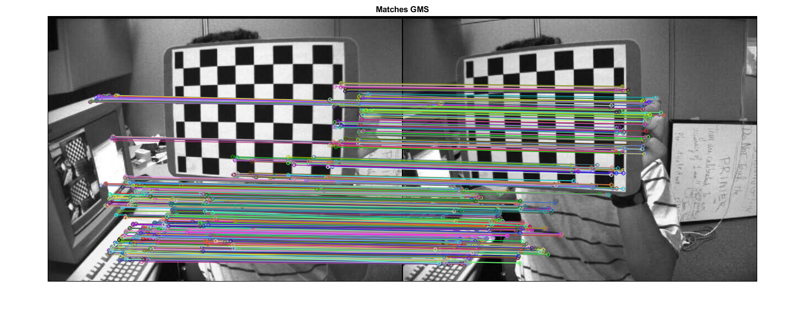

GMS matching strategy (image)
This sample demonstrates the GMS matching strategy.
Sources:
Options
opts = struct();
opts.nfeatures = 10000;
opts.fastThreshold = 20;
opts.drawSimple = true;
opts.withRotation = false;
opts.withScale = false;
% helper function
siz = @(img) [size(img,2), size(img,1)];create feature detector and descriptor matcher objects
detector = cv.ORB('MaxFeatures',opts.nfeatures, 'FastThreshold',opts.fastThreshold); matcher = cv.DescriptorMatcher('BruteForce-Hamming');
pair of images
imgL = imread(fullfile(mexopencv.root(),'test','left01.jpg')); imgR = imread(fullfile(mexopencv.root(),'test','right01.jpg'));
detect keypoints and compute and match descriptors
[kpRef, descRef] = detector.detectAndCompute(imgL);
[kpCur, descCur] = detector.detectAndCompute(imgR);
matchesAll = matcher.match(descRef, descCur);
fprintf('matches: %d\n', numel(matchesAll));matches: 5330
GMS matching
tic matchesGMS = cv.matchGMS(siz(imgL), kpRef, siz(imgR), kpCur, matchesAll, ... 'WithRotation',opts.withRotation, 'WithScale',opts.withScale); toc fprintf('matchesGMS: %d\n', numel(matchesGMS));
Elapsed time is 0.036273 seconds. matchesGMS: 1044
show results
out = cv.drawMatches(imgL, kpRef, imgR, kpCur, matchesGMS, ... 'NotDrawSinglePoints',opts.drawSimple); imshow(out), title('Matches GMS')